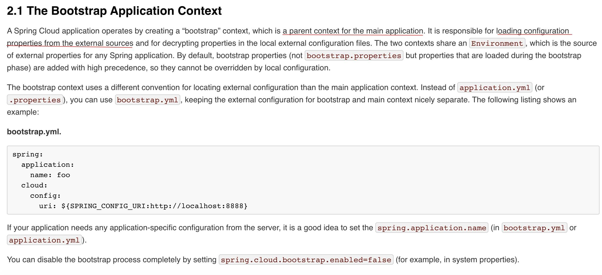
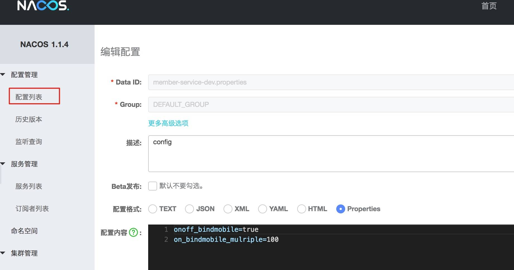

- 00 开篇导读.md.html
- 01 以真实“商场停车”业务切入——需求分析.md.html
- 02 具象业务需求再抽象分解——系统设计.md.html
- 03 第一个 Spring Boot 子服务——会员服务.md.html
- 04 如何维护接口文档供外部调用——在线接口文档管理.md.html
- 05 认识 Spring Cloud 与 Spring Cloud Alibaba 项目.md.html
- 06 服务多不易管理如何破——服务注册与发现.md.html
- 07 如何调用本业务模块外的服务——服务调用.md.html
- 08 服务响应慢或服务不可用怎么办——快速失败与服务降级.md.html
- 09 热更新一样更新服务的参数配置——分布式配置中心.md.html
- 10 如何高效读取计费规则等热数据——分布式缓存.md.html
- 11 多实例下的定时任务如何避免重复执行——分布式定时任务.md.html
- 12 同一套服务如何应对不同终端的需求——服务适配.md.html
- 13 采用消息驱动方式处理扣费通知——集成消息中间件.md.html
- 14 Spring Cloud 与 Dubbo 冲突吗——强强联合.md.html
- 15 破解服务中共性问题的繁琐处理方式——接入 API 网关.md.html
- 16 服务压力大系统响应慢如何破——网关流量控制.md.html
- 17 集成网关后怎么做安全验证——统一鉴权.md.html
- 18 多模块下的接口 API 如何统一管理——聚合 API.md.html
- 19 数据分库后如何确保数据完整性——分布式事务.md.html
- 20 优惠券如何避免超兑——引入分布式锁.md.html
- 21 如何查看各服务的健康状况——系统应用监控.md.html
- 22 如何确定一次完整的请求过程——服务链路跟踪.md.html
- 23 结束语.md.html
09 热更新一样更新服务的参数配置——分布式配置中心
几乎每个项目中都涉及到配置参数或配置文件，如何避免硬编码，通过代码外的配置，来提高可变参数的安全性、时效性，弹性化配置显得尤其重要。本篇就带你一起聊聊软件项目的配置问题，特别是微服务架构风格下的配置问题。
参数配置的演变
早期软件开发时，当然也包括现在某些小伙伴开发时，存在硬编码的情况，将一些可变参数写死在代码中。弊端也显而易见，当参数变更时，必须重新构建编译代码，维护成本相当高。
后来，业界形成规则，将一些可变参数抽取出来，形成多种格式的配置文件，如 properties、yml、json、xml 等等，将这些参数集中管理起来，发生变更时，只需要更新配置文件即可，不再需要重新编码代码、构建发布代码块，明显比硬编码强大太。弊端也有：
- 关键信息暴露在配置文件中，安全性低。
- 配置文件变更后，服务也面临重启的问题
再接着出现了分布式配置，将配置参数从项目中解耦出来，项目使用时，及时向配置中心获取或配置中心变更时向项目中推送，优势很明显：
- 省去了关键信息暴露的问题
- 配置参数无须与代码模块耦合在一起，可以灵活的管理权限，安全性更高
- 配置可以做到实时生效，对一些规则复杂的代码场景很有帮助
- 面对多环境部署时，能够轻松应对
微服务场景下，我们也更倾向于采用分布式配置中心的模式，来管理配置，当服务实例增多时，完全不用担心配置变得复杂。
开源组件介绍
Spring Cloud Config 就是 Spring Cloud 项目下的分布式配置组件，当然其自身是没有办法完成配置功能的，需要借助 Git 或 MQ 等组件来共同完成，复杂度略高。
业内不少公司开源不少分布式配置组件，比如携程的 Apollo（阿波罗），淘宝的 Diamond，百度的 Disconf，360 的 QConf ，阿里的 Nacos 等等，也可以基于 Zookeeper 等组件进行开发完成，技术选型产品还是比较多的。
本案例中采用 Nacos 作为选型，为什么选 Nacos ？首先是 Spring Cloud Alibaba 项目下的一员，与生态贴合紧密 。其次，Nacos 作为服务注册中心，已经在项目使用，它兼有配置中心的功能，无须额外引入第三方组件，增加系统复杂度，一个组件完成 Spring Cloud Config 和 Eureka 两个组件的功能。
Nacos 在基础层面通过DataId和 Group来定位唯一的配置项，支持不同的配置格式，如 JSON , TEXT , YMAL 等等，不同的格式，遵从各自的语法规则即可。
Nacos 配置管理
拿用户手机号绑定系统的功能为例，商场做促销活动，当天用户绑定手机号，并开通月卡，积分赠送翻倍，还有机会抽取活动大礼包，活动结束，恢复成原样。这是经常见到的玩法吧。
在 parking-member 项目的 pom.xml 中增加 jar 引入，不过前期我们已经应用到了 nacos 的服务注册中心功能，已经被引入到项目中去。
<dependency>
<groupId>com.alibaba.cloud</groupId>
<artifactId>spring-cloud-starter-alibaba-nacos-config</artifactId>
</dependency>
下面就将将与 nacos 的连接配置进去，由于 Spring Boot 项目中存在两种配置文件，一种是 application 的配置，一种是 bootstrap 的配置，究竟配置在哪个文件中呢？我们先来看 bootstrap 与 application 有什么区别。

nacos 与 spring-cloud-config 配置上保持一致，必须将采用 bootstrap.yml/properties 文件，优先加载该配置，填写在 application.properties/yml 中无效。
bootstrap.properties
spring.cloud.nacos.config.server-addr=127.0.0.1:8848
spring.profiles.active=dev
spring.application.name=member-service
spring.cloud.nacos.config.shared-data-ids=${spring.application.name}-${spring.profiles.active}.properties
spring.cloud.nacos.config.refreshable-dataids=${spring.application.name}-${spring.profiles.active}.properties
此时采用 spring.application.name−spring.application.name−{spring.profiles.active}动态配置的原因，是为后期进行多环境构建做准备，当然也可以直接写死 nacos 配置文件，但这样更不利于扩展维护。refreshable-dataids 配置项为非选必须，但如果缺失，所有的 nacos 配置项将不会被自动刷新，必须采用另外的方式刷新配置项，才能正常应用到服务中。
代码中使用配置项
打开会员绑定手机号的方法处，定义一个内部变量，接受配置中心的参数值。可以直接采用 Spring 的 [@Value ]方式取值即可，在 Controller 层或是 Service 层都可以使用，类中必须采用 [@RefreshScope ]注解，才能将值实时同步过来。
在 nacos 中定义两个配置项 onoffbindmobile 和 onbindmobile_mulriple，分别代表一个开关和积分倍数。同时定义两个局部变量接受 nacos 中两个配置项的值。
即使参数外部化配置后，代码中也必须预留出位置，供代码逻辑进行切换，也就是事先这个逻辑是预置进去的，是否执行逻辑，逻辑中相关分支等等，完全看配置参数的值。 比如注册时，往往会夹杂一些送积分、注册送优惠券及多大面额的优惠券，注册有机会抽奖等，等一个活动结束自动切换到另一个活动，如果事先未预置进去，代码是没有办法执行这个逻辑的。
整体代码如下：
@Value("${onoff_bindmobile}")
private boolean onoffBindmobile;
@Value("${on_bindmobile_mulriple}")
private int onBindmobileMulriple;
@Override
public int bindMobile(String json) throws BusinessException{
Member member = JSONObject.parseObject(json, Member.class);
int rtn = memberMapper.insertSelective(member);
//invoke another service
if (rtn > 0) {
MemberCard card = new MemberCard();
card.setMemberId(member.getId());
//判定开关是否打开
if (onoffBindmobile) {
//special logic
card.setCurQty("" +50 * onBindmobileMulriple);
}else {
//normal logic
card.setCurQty("50");
}
memberCardClient.addCard(JSONObject.toJSONString(card));
log.info("creata member card suc!");
}
return rtn;
}
Nacos 中配置参数项
bootstrap 配置文件中已经做了约定：配置项的 Key 与 Value 值的格式为 properties 文件，打开 nacos 控制台，进行"配置管理"->"配置列表"页面，点击右上角"新增"。

输入上文的约定的两个配置项，配置项可以应对多环境配置要求，在其它环境，建立对应的配置即可，输入 Data ID， 比如 member-service-prd.properties 或者 member-service-uat.properties，Group 采用默认值即可，当然如果需要分组的话，需要定义 Group 值，保存即可。
配置项的 value 类型需要与代码中约定的一致，否则解析时会出错。
若要变更配置项的值，修改后，发布即可，可以看到配置项的值是立即生效的。主要是借助于上文中提到的 [@RefreshScope ]注解，与 bootstrap 配置文件中 spring.cloud.nacos.config.refreshable-dataids 配置来完成的。如果缺失其中的一个，配置项生效只有重启应用，这与我们打造程序的易维护性、健壮性是相违背的。
可以将相应的数据库连接、第三方应用接入的密钥、经常发生变更的参数项都填充到配置中心，借助配置中心自身的权限控制，可以确保敏感项不泄露，同时针对不同的部署环境也可以很好的做好配置隔离。
至此，基于 Nacos 的配置中心配置完成，依照此配置，可以正常的迁移到其它服务中去。留下个思考题，在项目中采用类似 properties 文件的外部化配置，还是比较常见的，如何确保当中的关键信息不被泄漏呢，比如数据库的用户名、密码，第三方核心的 Key 等等。